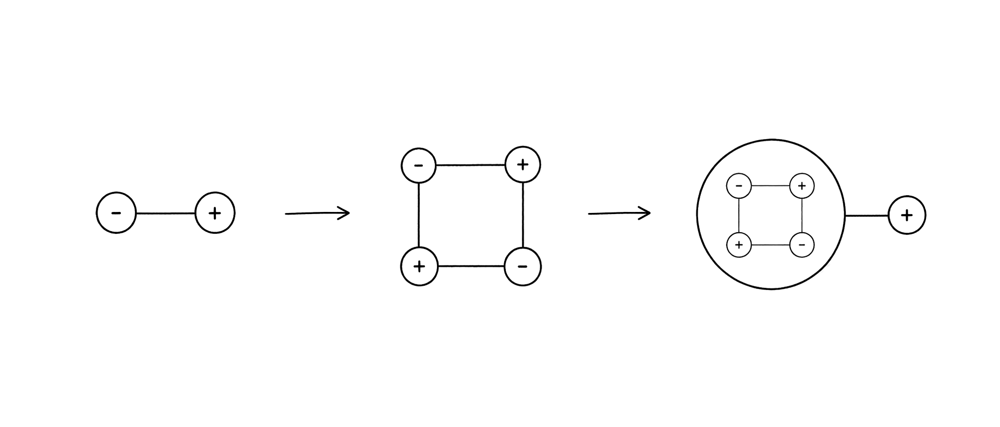
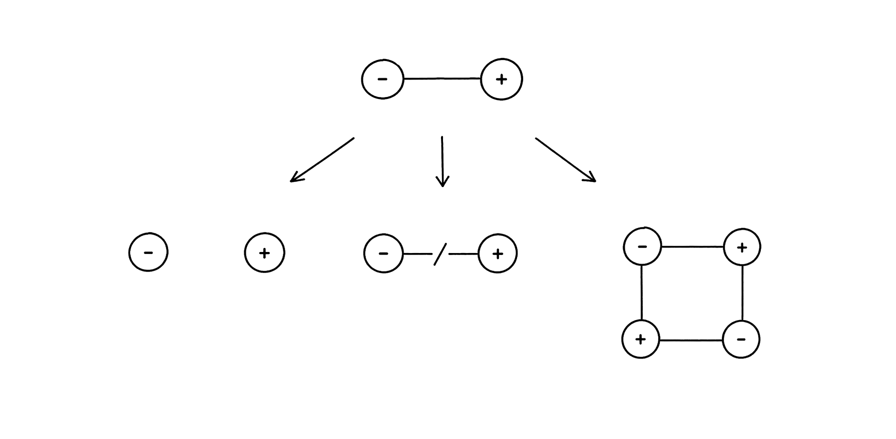
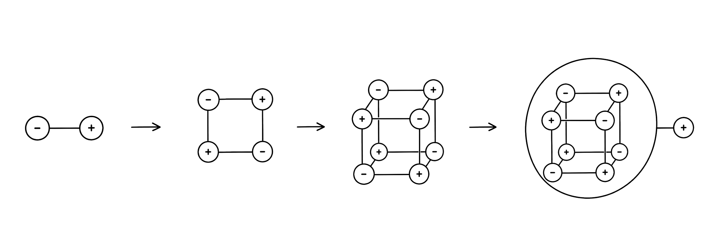
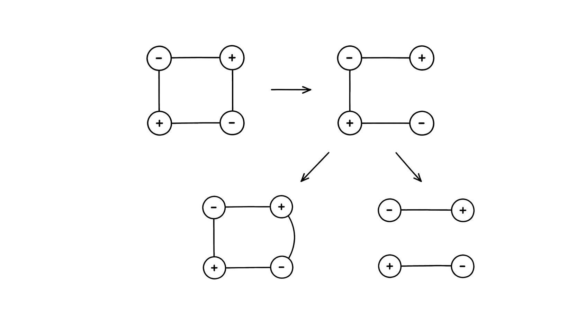
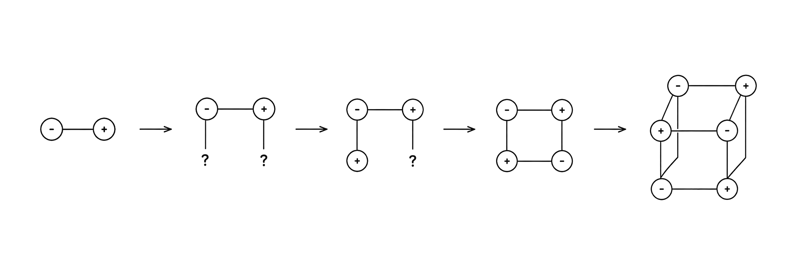
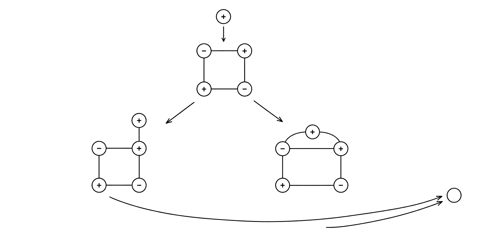
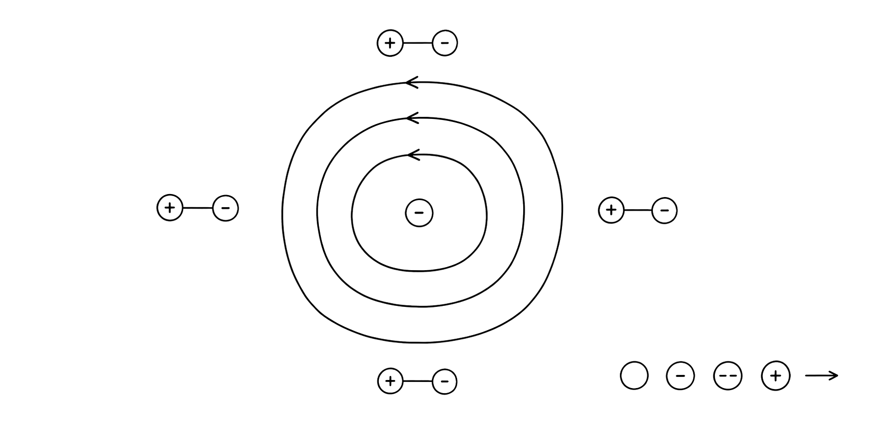
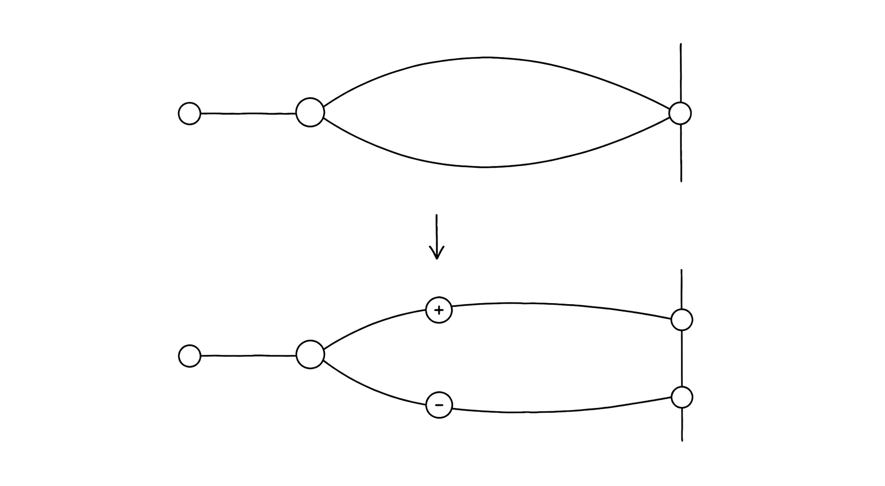
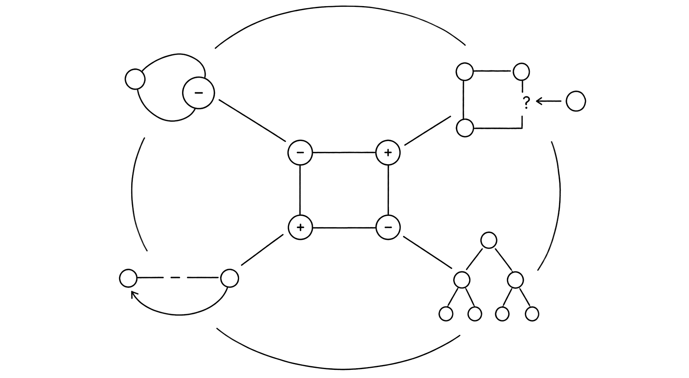

Contact
A meeting becomes productive when the two sides modify or complete one another and their joint consequence survives into a later contact.
Form begins when differences hold one another without erasing their difference. The resulting whole can be wounded, repaired, and encountered as a new difference at the next scale.
The theory does not begin with self-contained objects. It begins with oriented differences, their closure, and the future consequences of opening that closure.

The axiom begins before object, scale, and observer
+A and -A are two orientations of one difference. They are not independent substances carrying intrinsic meaning before relation.
A meeting becomes productive when the two sides modify or complete one another and their joint consequence survives into a later contact.
The held relation is encountered as one operative unit while its internal difference remains causally available. Stability is renewed balance, not immobility.
Balance does not cancel difference. It gives difference a body capable of continuing.

Scale is produced by closure rather than assigned from outside
An oriented relation has two distinguishable ends. This is the primitive 1:2: one whole participates through two sides.
Several relations may close into a surface or volume. Their lower causes remain inside; the closure gains one exterior interface.
The completed whole becomes a difference in another relation. No final scale or fixed number of internal parts is assumed.
The whole is not a summary of its parts. It is their retained ability to meet the future as one.

∂C=0 does not mean C=0
Let ∂ be the boundary operator. An oriented integral chain C is closed when ∂C=0; its internal differences remain present.
Removing a necessary relation r gives C-r an exposed boundary. The deficit changes the value of relations throughout the connected body.
A completion d succeeds when ∂d=∂r. It may restore, transform, divide, or stabilize another form.
Closure is recovered by boundary equivalence. Identity of material is not required.

Regeneration is retained constraint, not replay of a finished target
The deficit D_t=∂C_t is an unfinished relation, not a missing object with one prescribed replacement.
Ω(C_t) contains every continuation that can still close from the body's retained distinctions.
A compatible d_t joins the same body. Continuations inconsistent with that earned relation are no longer available.
When the remaining boundary reaches zero, the closure acts as one difference in a relation at the next scale.
The organism need not know its final form. It must retain steps that make its next closure more determinate.
The mmap hierarchy shown here is a proposed carrier architecture, not a result of the present assay.

Usefulness is earned through return, not assigned by a label
A compatible difference d extends a live closure: G_next=close(G+d). It becomes part of the body's next encounter.
If d exposes an earned relation r as false, the body performs local G-r+d and preserves everything not causally implicated.
The world must answer the changed action. A downstream witness compares live, blocked, and shuffled continuations; it does not choose the internal repair.
The future decides whether a difference was support, correction, or both.

Electricity is the dynamics of open differences
Electric tension is an exposed difference propagated through the connected body. External balance means only ∂C=0 at that scale.
A point deficit in an oriented three-dimensional body has a surrounding link S^2 with H_2(S^2;Z)=Z.
If the oriented generator g maps to -e, every allowed class is n g and every charge is -n e.
Charge cannot vary continuously inside an integral class. Its sign is orientation; its multiplicity is an integer.
The numerical scale e and the dynamical field law remain to be derived.

Observer participates · witness reads the surviving consequence
An electron is treated as a concentration of differences whose causal membership may extend beyond the eventual visible hit.
An interferometer and path detector enter the event. They alter which alternatives are physically distinguishable and which closure can form.
A later reader reconstructs the event from its stabilized trace. Reading is a new event, not a cause of the earlier result.
No classical wave or corpuscle is required as the primitive. What remains is to derive complex filling weights and the interference term from closure.

The scales share a law, not a ready-made mechanism
Differences close, act as one, reopen under injury, and continue through +d or -r+d. The transition is the common object.
Physics, biology, cognition, and mmap must each provide their own carrier, contact, deficit, completion, and surviving consequence.
The theory wins only where it derives a result or distinguishes causal-role completion from target replay, hidden controller, or passive storage.
A form is the history of differences that can still repair and continue one another. Useful difference is the unit of its growth and self-revision.
